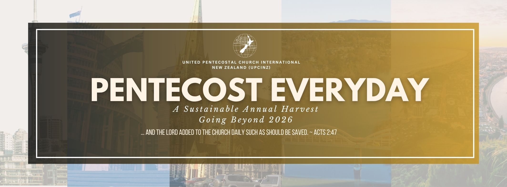
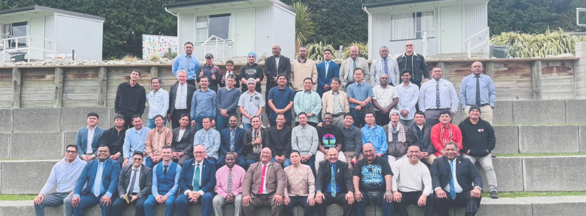

Pentecost Everyday
A Sustainable Annual Harvest — Going Beyond 2026
“…and the Lord added to the church daily such as should be saved.” Acts 2:47
About the UPCI NZ
The United Pentecostal Church International of New Zealand is a fellowship of apostolic congregations across the country, organised into the Northern, Central and Southern regions.
Wherever you are, you are welcome.
Read moreNorthern · Central · Southern
Three regions,
one fellowship.

Find a church near you
Congregations across the Northern, Central and Southern regions.
Our congregations
North to south
North Island Te Ika-a-Māui
Northern Region (4 congregations)
- Daystar FellowshipWhangarei
- Southside Pentecostal Fellowship (SSPF)Auckland
- New Zealand Family in Christ Church - UPCI NZAuckland
- Grace Fellowship - A UPCINZ ChurchHamilton
Central Region (2 congregations)
- Apostolic Life Church (ALC)Tauranga
- Storehouse ChapelHamilton
Southern Region (4 congregations)
- Church Triumphant WellingtonWellington
Cook Strait · Te Moana-o-Raukawa
South Island Te Waipounamu
- The Pentecostals of Rangiora (POR)Rangiora
- Apostolics of Christchurch (AOC)Christchurch
- Lighthouse of Jesus Christ - RollestonRolleston
Coming up
More events-
Thu – Thu
1–22
October
Prayer MinistryOn nowPM – 22 Day Prayer & Fasting (General Conference)
Nationwide
-
Thursday
22
October
NationalExecutive Board Meeting
Wellington
-
Friday
23
October
NationalAnnual General Meeting (AGM) & Ministers Seminar
Wellington
-
Sat – Sun
24–25
October
National24–25 OctAnnual General Conference
Wellington
-
Sunday
1
November
Home MissionsMission Sunday Promotion
Nationwide
-
Saturday
14
November
Men's DepartmentOnlineMM – Men's Online Virtual Training
Nationwide (online)
-
Sunday
22
November
Children's MinistryCM – Promotion
Nationwide
-
Sunday
6
December
Home MissionsMission Sunday Promotion
Nationwide